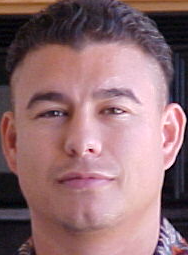

Frank Cobarrubias

Summary
I am experienced in various networking, programming, and security technologies coupled with strong customer service skills.
Skills
- Configure Cisco, HP, Nortel, H3C switches
- Configure Cisco routers
- Experience with Microsoft SQL, MySQL, MSDE, PostgreSQL
- Experience with SonicWALL, Cisco, PAN firewalls/UTM
- Install, configure, patch, and troubleshoot XP, Vista, Windows 7/8/10, Server 2008/2016
- Install and configure Linux; Ubuntu, RHEL, CentOS etc.
- Experience creating, editing, and reviewing technotes,FAQ's, and whitepaper's
- Some experience working with virtualization: VMware Workstation/Vsphere and Containers
- Siebel, Salesforce and other CRM software
Work Experience
- Tier 2 Technician - CSI Healthcare IT
Feb 2019 - Apr 2019
- Tech Support Specialist - Hayward Unified School District
Jul 2011 - Oct 2014
- Provide tech support for questions and issues via phone, Kaseya, in person, and email
- Install, modify, repair, and RMA various pc/server hardware, software, printers etc.
- Create images and image/reimage hardware via Ghost or installation media
- Manage AD users and computers. Create, disable, modify accounts or group policies
- Assist with multi-vendor VLAN creation/modification, PAN firewall configuration
- Quickly troubleshoot network issues due to hardware or software
- Monitor network for outages via Nagios. Troubleshoot and/or escalate as needed
- Product Support Engineer - Imperva
Jun 2010 - Aug 2010
- First line customer support for database and application security solutions
- Sr. Tech Support Engineer/TAM/QA Escalation Engineer - SonicWALL
Nov 2001 - Apr 2009
- Received technically complex escalations of customer reported issues and maintained ownership until completely resolved
- Resolved customer reported issues while working closely with engineering and other cross functional teams
- Received technically complex escalations of customer reported issues and/or bugs from Tech Support Engineering Teams
- Replicated issues and worked directly with principal engineers for possible workarounds and patches
- Tested patches, created tech notes, and relayed known issues to support teams
- Delivered very high touch and direct tech support to enterprise accts and strategic partners
- Scheduled and hosted Quarterly Business Reviews with enterprise direct contacts and their management to ensure customer satisfaction
- Consistently earned A grades from all accounts
- Tech Support Engineer - Red Creek
Jan 2001 - Nov 2001
- Responsible for second and third level support for RedCreek hardware and software
- Troubleshooting of implementations ranging from the home user to the enterprise
- Resolved issues involving CheckPoint, Cisco, and other router/firewall products
- Setup tests in shared support lab to test interoperability, recreate customer scenarios, and verify feasibility of proposed VPN implementations
Certifications
- CCNA - Cisco Certified Network Associate Routing and Switching (CCNA Routing and Switching)
- MCP - Microsoft Certified Professional
- CompTIA Security+ ce
- CompTIA A+ ce
Education
- California State University - East Bay
- Bachelor of ScienceBusiness Administration; Accounting, in process
- Ohlone College
Contact Me
My Hobbies